3 mars: Troisième jour du "circuit" et anniversaire d'Irmy.
La journée commence par une courte visite à Figueira da Foz, une station balnéaire, un peu au nord de Pombal. Nous n'avons vu ni le casino, ni les rues piétonnes commerçantes annoncées sur le programme.
À l'intention de Félix, j'ai photographié la caserne de pompiers (bombeiros).
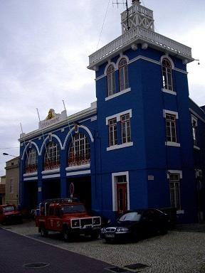
Figueira da Foz
Nous reprenons l'autoroute vers l'est, en direction de Coimbra, la 3ème ville du Portugal par ordre d'importance. Elle fut capitale du pays et la résidence de ses rois pendant plusieurs siècles. Elle doit son animation et sa vitalité aux traditions de son université, la plus prestigieuse du pays dont la partie la plus ancienne, la Velha Universidade coiffe une colline au cœur de la cité.
C'est par cette auguste institution que nous commençons notre "découverte personnelle" de la ville.
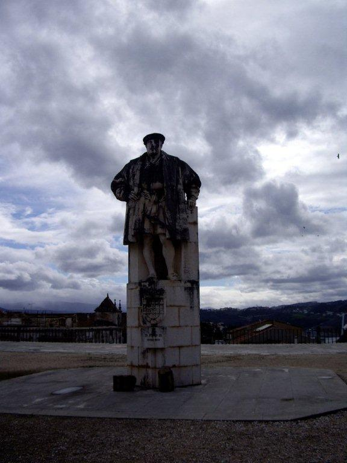
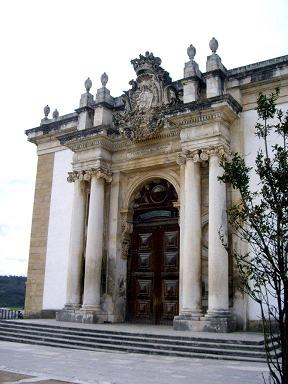
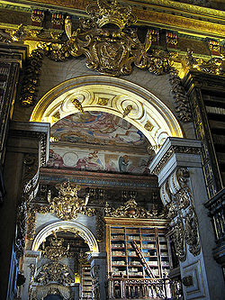
Coimbra: Dom João V, fondateur de la bibliothèque - Porte et plafond de la bibliothèque
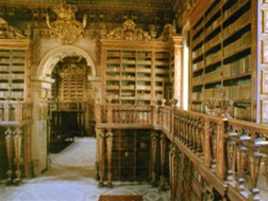
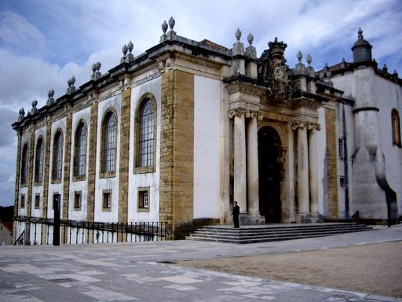
Coimbra: Vue d'ensemble et plafond de la bibliothèque
La visite de l'université de Coimbra commence par celle de la prestigieuse bibliothèque Johannine. Trois salles en enfilade tapissées de rayonnages de bois sculptés et peints, rehaussés de chinoiseries, d'or et de marbre, constituent une perspective unique dont le caractère impressionnant est renforcé par les fresques en trompe-l'œil du plafond. Elles renferment 30.000 volumes et 5.000 manuscrits, 300.000 autres ouvrages reposant dans les sous-sols. 24 échelles permettent d'accéder aux rayons supérieurs. Des chauves-souris, invisibles le jour, détruisent, paraît-il, les insectes friands de papier. On étale, la nuit, des toiles pour protéger des déjections. La statue de dom João V, fondateur de la bibliothèque en 1724, tourne le dos à la ville au milieu de l'esplanade de l'université. Elle boude, ce faisant, une belle vue sur le fleuve Mondego avec un magnifique pont suspendu à pilier central unique incliné.
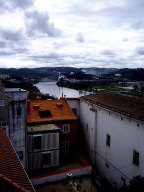
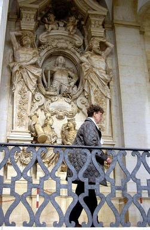
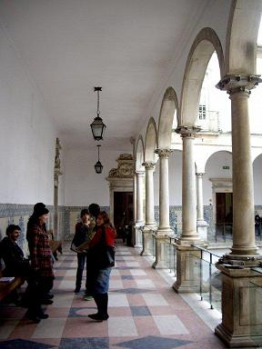
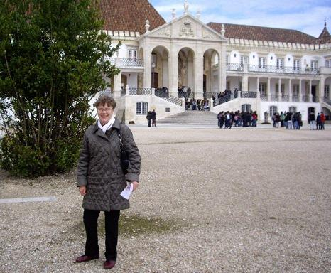
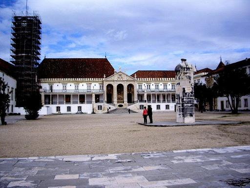
Coimbra: l'université. Le bâtiment principal
La galerie à colonnades, dite Via Latina qui longe la façade du bâtiment principal fut construite au XVIIIème siècle pour améliorer l'accès à la "sala dos Capelos" et à la "sala do Exame Privado", deux salles de style manuélin malheureusement fermées au public.
La tour en cours de restauration est appelée "la chèvre", un sobriquet qui date de l'époque de Salazar.
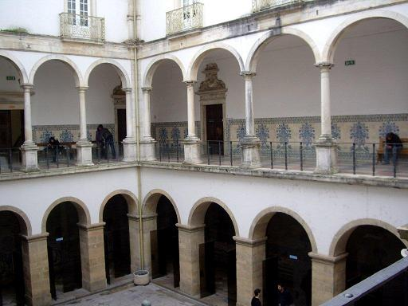
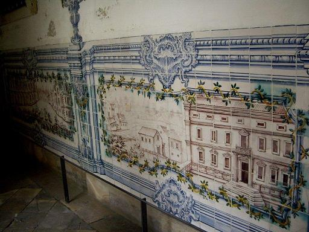
La structure en U qui constitue le cœur de l'université était à l'origine une puissante forteresse mauresque du Xème siècle.
En 1130 lorsqu'Afonso Henriques, premier roi du Portugal vint s'installer à Coimbra, l'édifice prit le nom de 'Paço Real' qui ne fut déserté qu'au XVème siècle. Il ne retrouva son identité qu'en 1537, lorsqu'il fut rattaché à l'université.
L'édifice après avoir subi de nombreuses transformations au cours des siècles, ce qui explique la présence d'éléments aussi bien manuélins que baroques, demeura pratiquement inchangé depuis un siècle. On se limita à l'installation de radiateurs électriques, ce qui oblige les étudiants à se serrer les uns contre les autres en hiver.
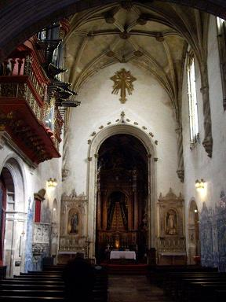
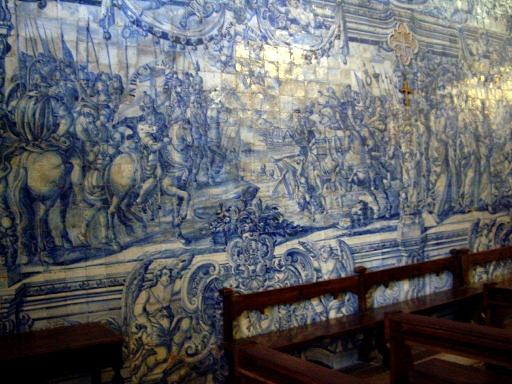
La chapelle de l'université
La chapelle Saint Michel a des voûtes ornées de belles peintures et des murs décorés d'azulejos. Le rétable doré, signé Bernardo Coelho, présente un motif que l'on retrouve souvent au Portugal: un empilement de socles ou de marches supportant une effigie sacrée. Mais ce sont les grandes orgues de 1733, encastrées dans une chinoiserie peinte et sculptées qui suscitent le plus de commentaires d'une maîtresse d'école accompagnée d'une bande d'écoliers.

Coimbra: la ville
Après avoir pris avec nos deux compagnes françaises un "frugal" repas au 1er étage d'une taverne (pour nous, deux "demi-doses" de morue "al braz" capables de nourrir un régiment) et récupéré mon guide oublié dans le bureau de loterie qui vend les timbres, nous poursuivons notre "découverte personnelle" de la ville, qui avec ses pentes et ses vieilles rues pavées exige du visiteur plus qu'une demi-dose d'énergie et des mollets aguerris.
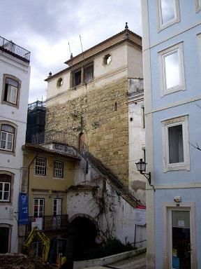
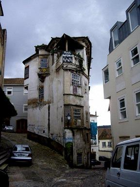
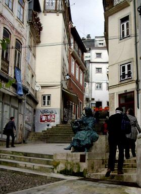
Coimbra: les ruelles pentues
Nous parvenons à découvrir un monument vanté par notre guide, la Sé Velha. C'est la plus ancienne cathédrale du Portugal (1140) et on la doit à deux français, maîtres Bernard et Robert.
Les azulejos mudéjares du XVIème siècle et les chapiteaux d'inspiration orientale du transept donnent un certain relief à cet ensemble dépouillé.
Le retable gothique flamboyant du maître-autel est dû aux maîtres flamands Olivier de Gand et Jean d'Ypres.
Sur la droite, la Chapelle du Saint Sacrement, recèle un ensemble de sculptures signé Tomé Velho, élève de Jean de Rouen
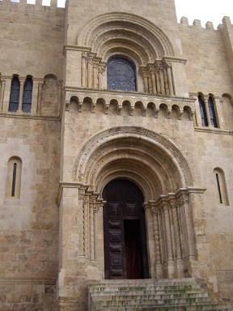
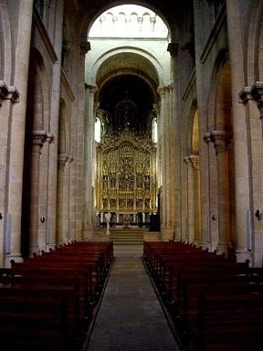
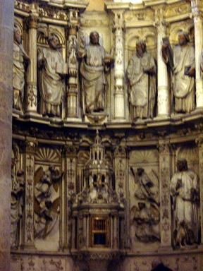
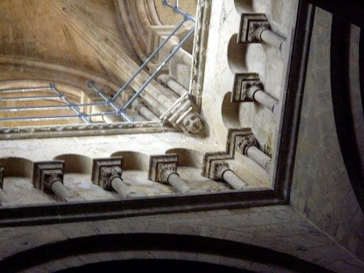
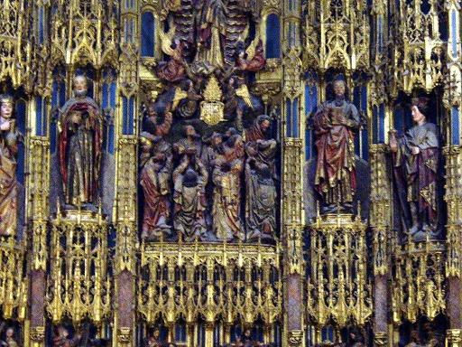
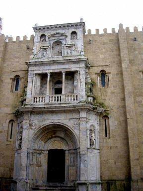

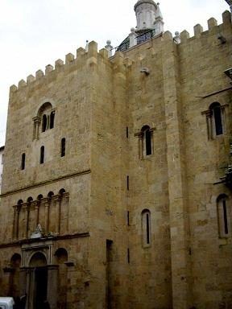
Coimbra: la Sé Velha
Les ruelles entourant la vieille cathédrale offrent de belles échappées vers la vallée du Mondego.
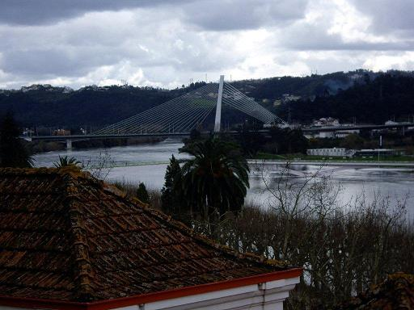
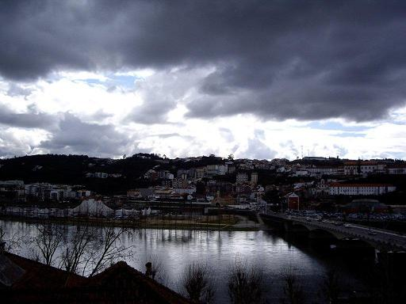
Coimbra: vues sur le Mondego
Le Palace-Hôtel de Buçaco
Nous rejoignons le minibus qui nous attend au parking de la ville basse et nous dirigeons vers la forêt de Buçaco située à 25 km au nord de Coimbra. Elle fut utilisée comme lieu de retraite par les Bénédictins du VIème siècle, et clôturée par les Carmes au XVIIème siècle, sur l'ordre du Pape Grégoire XV, pour en interdire l'accès aux femmes (pouah!). Pour se défouler, les moines y plantèrent des arbres exotiques qui entourent des grottes, des points d'eau et des fontaines. La vallée des Fougères (vale dos Fetos) est particulièrement belle.
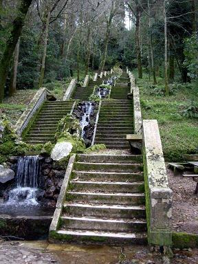
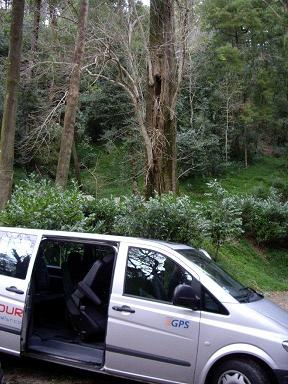
Buçaco: la forêt aménagée par les Carmes
Le style manuélin plusieurs fois évoqué trouve son application hyperbolique dans le néo-manuélisme, une mode née vers 1850. Ce style, né sous le règne de Manuel Ier (1495 - 1521), était pourtant l'expression artistique portugaise la plus exubérante qui soit, avec ses nœuds marins, ses cordages entortillés, ses textures coralliennes et ses sphères armillaires. On trouve un entassement de ces ornements, mariés avec l'Art nouveau et des fresques d'azulejos, dans le palais-hôtel de Buçaco, niché au cœur de la forêt. Construit vers 1900, c'était à l'origine un pavillon de chasse du roi Manuel II. Celui-ci n'en profita pas bien longtemps, car il fut chassé du pouvoir deux ans plus tard par le coup d'état militaire qui instaura la république du Portugal.
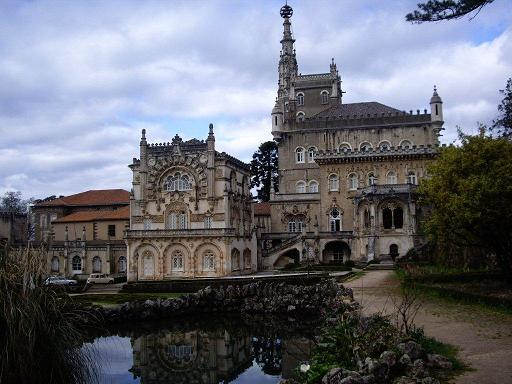
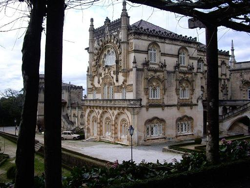
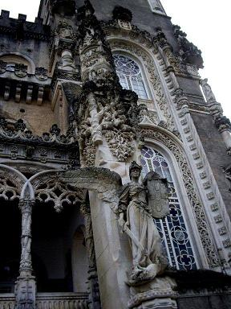
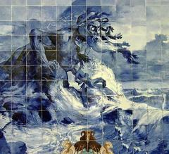
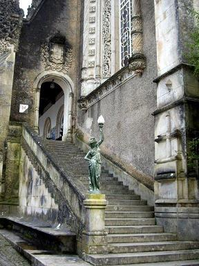
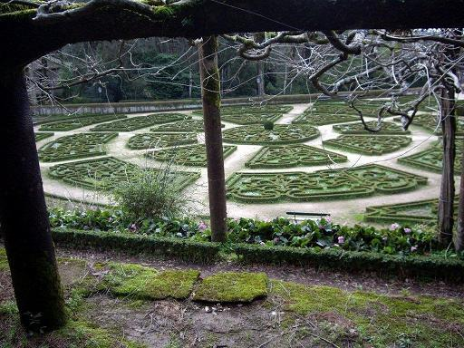
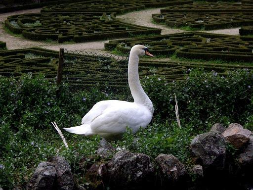
Buçaco: l'hôtel-palace
Les Thermes de Luso
Trois kilomètres plus bas se trouve la ville thermale de Luso, où l'on peut boire l'eau des sources, suivre une cure, se faire faire des massages...(mais la consommation d'ouzo n'est pas conseillée).
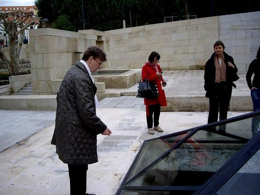
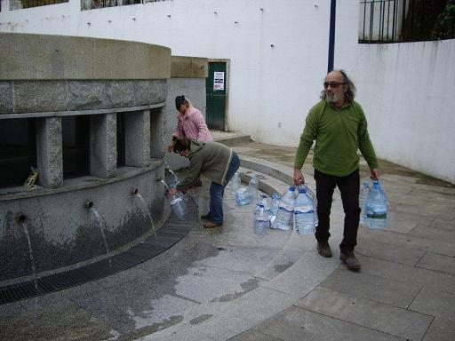
Luso: la source et la fontaine.
Ainsi s'achève notre troisième journée.
Nous n'avons toujours pas entendu de fado!